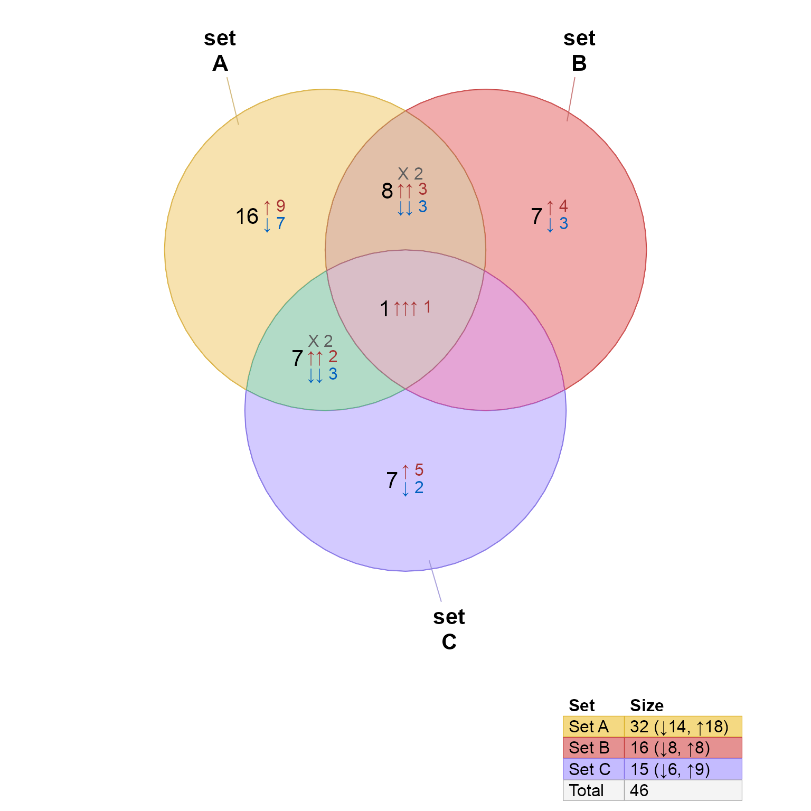
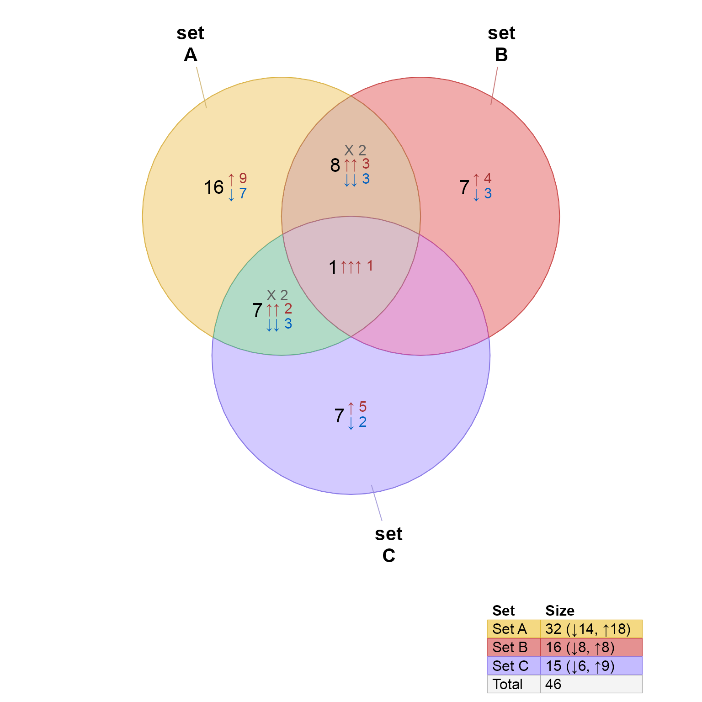

Directional Venn diagram
venndir(
setlist,
overlap_type = c("detect", "concordance", "each", "overlap", "agreement"),
sets = NULL,
set_colors = NULL,
setlist_labels = NULL,
legend_labels = NULL,
proportional = FALSE,
show_labels = "Ncs",
return_items = TRUE,
show_items = c(NA, "none", "sign item", "sign", "item"),
max_items = 3000,
show_zero = FALSE,
font_cex = c(1, 1, 0.8),
show_label = NA,
display_counts = TRUE,
poly_alpha = 0.6,
alpha_by_counts = FALSE,
label_style = c("basic", "fill", "shaded", "shaded_box", "lite", "lite_box"),
label_preset = "none",
unicode = TRUE,
big.mark = ",",
curate_df = NULL,
venn_jp = NULL,
inside_percent_threshold = 0,
item_cex = NULL,
item_style = c("default", "text", "gridtext"),
item_buffer = -0.15,
sign_count_delim = ": ",
padding = c(3, 2),
r = 2,
segment_distance = 0.1,
sep = "&",
do_plot = TRUE,
verbose = FALSE,
debug = 0,
circle_nudge = NULL,
lwd = 1,
rotate_degrees = 0,
...
)Arguments
- setlist
listof named vectors, whose names represent set items, and whose values represent direction using valuesc(-1, 0, 1).- overlap_type
charactervalue indicating the type of overlap logic:"each"records each combination of signs;"overlap"disregards the sign and returns any match item overlap;"concordance"represents counts for full agreement, or"mixed"for any inconsistent overlapping direction;"agreement"represents full agreement in direction as"agreement", and"mixed"for any inconsistent direction.
- sets
integerindex with optional subset of sets insetlistfor the Venn diagram. This option is useful when defining consistentset_colorsfor all entries insetlist.- set_colors
charactervector of R colors, orNULL(default) to use default colors defined bycolorjam::rainbowJam().- setlist_labels
charactervector with optional custom labels to display in the Venn diagram. This option is intended when thenames(setlist)are not suitable for display, but should still be maintained as the original names.- legend_labels
charactervector with optional custom labels to display in the Venn legend. This option is intended when thenames(setlist)are not suitable for a legend, but should still be maintained as the original names. The legend labels are typically single-line entries and should have relatively short text length.- proportional
logical(default FALSE) indicating whether to draw proportional Venn circles, also known as a Euler diagram. Proportional circles are not guaranteed to represent all possible overlaps. Proportional circles are determined by callingeulerr::eulerr(). Useshape="ellipse"foreulerr()to provide elliptical shapes.- show_labels
characterstring to define the labels to display, and where they should be displayed. The definition uses a single letter to indicate each type of label to display, using UPPERCASE to display the label outside the Venn shape, and lowercase to display the label inside the Venn shape. The default"Ncs"displays _N_ame (outside), _c_ount (inside), and _s_igned count (inside).The label types are defined below:
_N_ame: "n" or "N" - the set name, by default it is displayed.
_O_verlap: "o" or "O" - the overlap name, by default it is hidden, because these labels can be very long, also the overlap should be evident in the Venn diagram already.
_c_ount: "c" or "C" - overlap count, independent of the sign
_p_ercentage: "p" or "P" - overlap percentage, by default hidden, but available as an option
_s_igned count: "s" or "S" - the signed overlap count, tabulated based upon
overlap_type("each", "concordant", "agreement", etc/)_i_tems: "i" only, by default hidden. When enabled, item labels defined by
show_itemsare spread across the specific Venn overlap region.
- return_items
logical(default TRUE) indicating whether to return items in the overlap data. WhenFALSEitem labels also cannot be displayed in the figure. The main reason not to return items is to conserve memory, for example ifsetlistis extremely large.- show_items
characterused to define the item label, only used when theshow_labelentry includes"i"which enables item display inside the Venn diagram."item": shows only the item labels"sign": shows only the sign of each item"sign items": shows the sign and item together (or"item sign"will show the item, then the sign).
- max_items
numeric(default 3000) indicating the maximum number of item labels to display when enabled.- show_zero
logical(default FALSE) indicating whether empty overlaps are labeled with count zero0. Whenshow_zero=TRUEthe count zero label is displayed, otherwise no count label is shown.- font_cex
numericvector recycled and applied in order:Set label
Overlap count label
Signed count label
The default
c(1, 1, 0.8)defines the signed count label slightly smaller than other labels.- poly_alpha
numeric(default 0.6) value between 0 and 1, for alpha transparency of the polygon fill color. This value is ignored whenalpha_by_counts=TRUE.poly_alpha=1is completely opaque (no transparency)poly_alpha=0.8is 80% opaque
- alpha_by_counts
logicalindicating whether to define alpha transparency to Venn polygon fill based upon the counts contained in each polygon. WhenTRUEthepoly_alphais ignored.- label_style
characterstring indicating the style for labels. Label color is adjusted based upon the determined background color, determined based upon the label fill color, and either the device background color, or Venn overlap fill color. There are pre-defined label styles."basic"no background shading"fill"an opaque colored background"shaded"a partially transparent colored background"lite"a partially transparent lite background"box"adds a dark border around the label region
- label_preset
characterdeprecated in favor ofshow_labels. This argument is passed tovenndir_label_style().- unicode
logical(default TRUE) indicating whether to display Unicode arrows for signed overlaps. Passed tocurate_venn_labels(). Useunicode=FALSEif the signed label is not displayed properly. The most common causes: (1) the R console (terminal) is not configured to allow Unicode (UTF-8 or UTF-16) characters; (2) the display font does not contain Unicode characters in the font set.- big.mark
character(default",") passed toformat()to augment numeric labels.- curate_df
data.frameorNULLpassed tocurate_venn_labels(), used to customize the formatting of signed overlaps.- venn_jp
NULLor optionalJamPolygonwhich contains one polygon for eachsetlist, intended to allow custom shapes to be used. Otherwiseget_venn_polygon_shapes()is called.- inside_percent_threshold
numeric(default 0) indicating the percent area that a Venn overlap region must contain in order for the count label to be displayed inside the region, otherwise the label is displayed outside the region. Values are expected to range from 0 to 100.- item_cex
numericvalue (default NULL) used to resize item labels.When
item_cexis a single value orNULL, auto-scaling is performed based upon the number of items in each overlap polygon, and the relative polygon areas. Any singlenumericvalue foritem_cexis multiplied by the auto-scaled value for each overlap region.When two or more values are supplied as a vector, the values are recycled and applied across all Venn overlap regions, in the order they appear in
signed_overlaps().
- item_style
characterstring (default "text") indicating the style to display item labels when they are enabled."default"detects whether item labels contain"<br>"for newlines, and uses"gridtext"if that is the case, otherwise it uses"text"which is markedly faster."text"option is substantially faster, but does not allow markdown."gridtext": substantially slower for a large number of labels, but enables use of limited markdown by callinggridtext::richtext_grob(). Mostly useful forvenn_meme().
- item_buffer
numericvalue (default -0.15) indicating the buffer adjustment applied to Venn overlap regions before arranging item labels. Passed tolabel_fill_JamPolygon()viarender_venndir(). Negative values are recommended, so they shrink the region.- sign_count_delim
characterstring used as a delimiter between the sign and counts, whenoverlap_typeis not"overlap".- padding
numericpadding in units"mm"(defaultc(3, 2)) for overlap count, and signed overlap count labels, in order.- r
numericradius in units"mm"used for rounded rectangle corners for labels. Only visible whenlabel_presetincludes a background fill ("lite", "shaded", "fill"), or "box".- segment_distance
numericvalue indicating the distance between outside labels and the outer edge of the Venn diaram region. Larger values place labels farther away, while also shrinking the relative size of the Venn diagram.- sep
characterused as a delimiter between set names, the default is"&".- do_plot
`logical (default TRUE) indicating whether to generate the the figure.
When
do_plot=TRUEit callsrender_venndir()to creategridobjects to be displayed. Arguments in...are passed torender_venndir(): To hide display, usedo_draw=FALSE. To prevent callinggrid::grid.newpage()so the plot can be drawn inside another active display device, usedo_newpage=FALSE.When
do_plot=FALSEthe returnedVenndirobject can be passed torender_venndir()to render the figure. Same points are valid regardingdo_drawanddo_newpage, which are arguments
- verbose
logicalindicating whether to print verbose output.- debug
numericoptional internal debug.- circle_nudge
listofnumericx,y vectors. Not yet re-implemented after the version 0.0.30.900 update.- rotate_degrees
numericvalue in degrees, allowing rotation of the Venn diagram. Not yet re-implemented after version 0.0.30.900.- ...
additional arguments are passed to
render_venndir().
Value
Venndir object with slots:
"jps":JamPolygonwhich contains each set polygon, and each overlap polygon defined for the Venn diagram."label_df":data.framewhich contains the coordinates for each Venn set, and Venn overlap label."setlist":listas input tovenndir(). This entry may be empty.
When do_plot=TRUE this function also calls render_venndir(),
and returns the grid graphical objects (grobs) in the attributes:
"gtree": agrid::gTreeobject suitable for drawing withgrid::grid.draw(attr(vo, "gtre"))"grob_list": alistofgridobject components used to build the complete diagram, they can be plotted individually, or assembled withdo.call(grid::gList, grob_list). Thegrid::gListcan be assembled into agTreewith:grid::grobTree(gList=do.call(grid::gList, grob_list)"viewport": thegrid::viewportthat holds important context for the graphical objects, specifically the use of coordinategrid::unitmeasure"snpc", which maintains a fixed aspect ratio.
See also
Other venndir core:
render_venndir(),
signed_overlaps(),
textvenn(),
venn_meme()
Examples
setlist <- make_venn_test(100, 3, do_signed=FALSE);
setlist <- make_venn_test(100, 3, do_signed=TRUE);
vo <- venndir(setlist)
 jamba::sdim(vo);
#> rows cols class
#> jps 10 JamPolygon
#> label_df 21 51 data.frame
#> setlist 3 list
# custom set labels
vo <- venndir(setlist,
setlist_labels=paste("set", LETTERS[1:3]))
jamba::sdim(vo);
#> rows cols class
#> jps 10 JamPolygon
#> label_df 21 51 data.frame
#> setlist 3 list
# custom set labels
vo <- venndir(setlist,
setlist_labels=paste("set", LETTERS[1:3]))
 # custom set labels with Markdown custom colors
vo <- venndir(setlist,
setlist_labels=paste0("Set <span style='color:blue'>", LETTERS[1:3], "</span>"))
# custom set labels with Markdown custom colors
vo <- venndir(setlist,
setlist_labels=paste0("Set <span style='color:blue'>", LETTERS[1:3], "</span>"))
 # custom set and legend labels
vo <- venndir(setlist,
setlist_labels=paste0("set<br>", LETTERS[1:3]),
legend_labels=paste("Set", LETTERS[1:3]))

# custom set and legend labels
# proportional
# Set Name is inside with show_labels having lowercase "n"
vo <- venndir(setlist,
proportional=TRUE,
show_labels="ncs",
label_style="lite box",
setlist_labels=paste0("Set: ", LETTERS[1:3]),
legend_labels=paste("Set", LETTERS[1:3]))
# custom set and legend labels
vo <- venndir(setlist,
setlist_labels=paste0("set<br>", LETTERS[1:3]),
legend_labels=paste("Set", LETTERS[1:3]))

# custom set and legend labels
# proportional
# Set Name is inside with show_labels having lowercase "n"
vo <- venndir(setlist,
proportional=TRUE,
show_labels="ncs",
label_style="lite box",
setlist_labels=paste0("Set: ", LETTERS[1:3]),
legend_labels=paste("Set", LETTERS[1:3]))